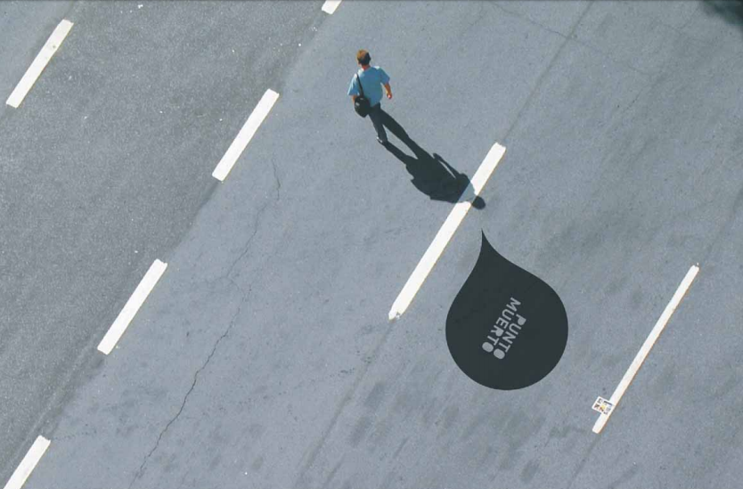

Cada año entre 20 millones y 50 millones de personas sufren traumatismos no mortales, como consecuencia de accidentes de tránsito.
Siendo la principal causa de muerte entre jóvenes de 15 a 17 años.
PUNTO MUERTO es una campaña que está orientada a prevenir accidentes viales en la población
de jóvenes, por la proximidad de acceder a una licencia de conducir,
ser este un momento propicio para fomentar conductas responsables.
Nos proponemos concientizar a la juventud y a la población en general, trabajando de la mano de
Instituciones Gubernamentales y Educativas.
HECHOS FUNDAMENTALES
Tan solo en el 2015, 1 de cada 2 percances automovilísticos
fueron entre jóvenes y se relacionan con el consumo de alcohol y otros factores tales como la velocidad,
la conducción bajos los efectos de drogas y el envío de mensajes de texto.
Las tasas de mortalidad por accidentes de tránsito
son 3 veces mayores en países en desarrollo como México.
Total de heridos
227,252
CONOCE MÁS



FQA
¿Qué es punto muerto?
Es una campaña de prevención contra accidentes de transito en adolescentes
que tiene como objetivo concientizar y prevenir los accidentes que comprometen
la vida de nuestra población.
¿A quién se dirige esta campaña?
Está dirigida a adolescentes de 17 y 18 años que tienen acceso a la licencia
de conducir
¿Qué medidas puedo realizar para evitar accidentes?
Respetar los limites de velocidad.
Uso de casco por ciclistas y motociclistas.
Protección para niños en automoviles como asientos
para lactantes y niños, elevadores y cinturones de seguridad.
¿De dónde son los datos que consulto?
Los datos que consultas son del Departamento de Transporte
¿Qué medidas debo tomar si soy peaton?
Evita caminar por carriles bici o por la calzada.
Cruza siempre en línea recta y por el paso de peatones o los pasos con semáforo.
Antes de cruzar una calle, mira bien a derecha e izquierda.